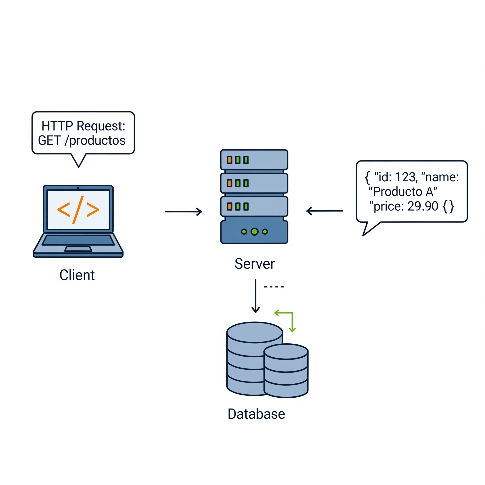
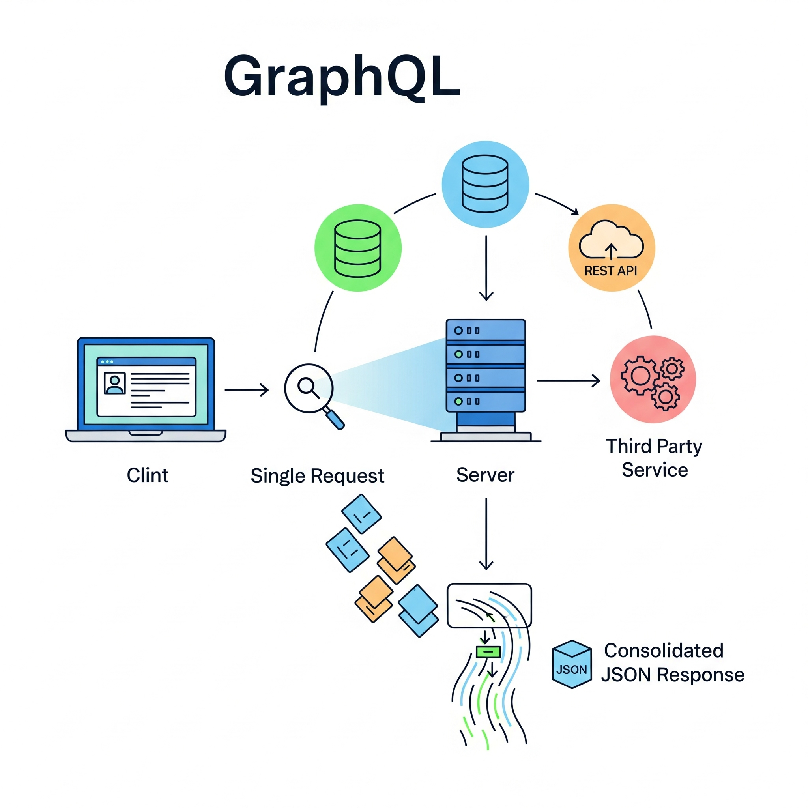
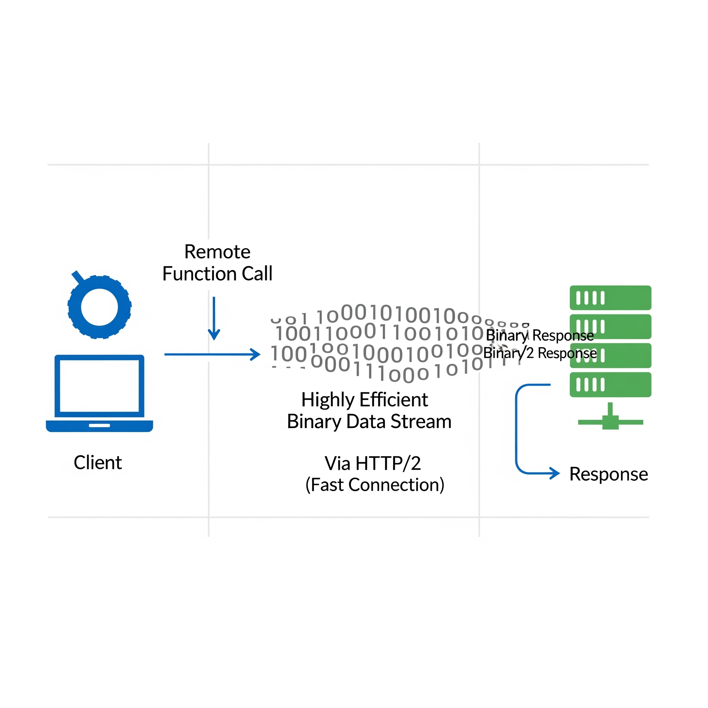
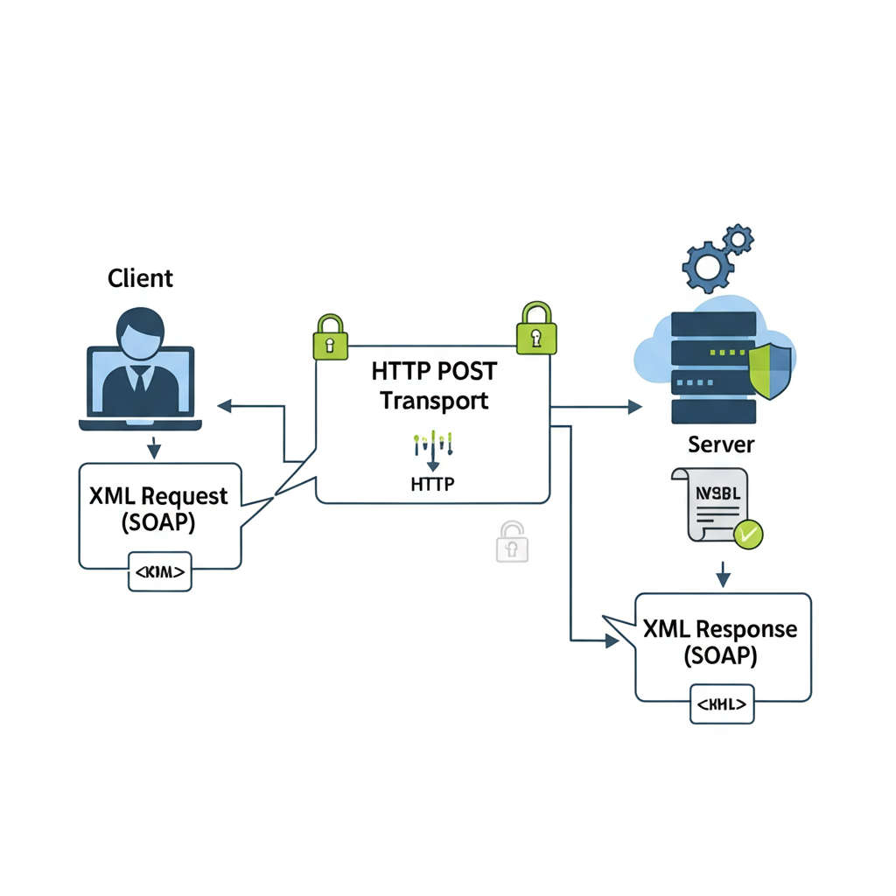

Restful
Definición: Estilo web simple, usa HTTP estándar.
Aplicación: App móvil solicita perfil de usuario (ej: GET /usuarios/123).
1. Cliente
↓
2. Solicitud HTTP
↓
3. Servidor (JSON)
GraphQL
Definición: Lenguaje de consulta. Pides *exacto* lo que necesitas.
Aplicación: Red social muestra nombre y posts en 1 llamada.
1. Cliente
↓
2. Consulta (Query)
↓
3. Servidor (JSON Exacto)
gRPC
Definición: RPC de alto rendimiento. Usa HTTP/2 y Protobufs.
Aplicación: E-commerce: carrito verifica stock con inventario.
1. Cliente
↓
2. Llamada RPC (Protobuf)
↓
3. Servidor (Respuesta Binaria)
SOAP
Definición: Protocolo XML robusto. Alta seguridad, estandarizado.
Aplicación: Sistemas bancarios: transferencia segura con estándares.
1. Cliente
↓
2. Mensaje SOAP (XML)
↓
3. Servidor (Respuesta SOAP)
Tabla Comparativa
| Característica | RESTful | GraphQL | gRPC | SOAP |
|---|---|---|---|---|
| Tipo | Estilo de arquitectura | Lenguaje de consulta | Framework RPC | Protocolo |
| Formato | JSON, XML, texto | JSON | Binario (Protobuf) | XML |
| Rendimiento | Bueno | Excelente | Muy Alto | Regular |
| Caso de Uso | APIs públicas, web/móvil | Apps con datos complejos | Microservicios internos | Sistemas empresariales |